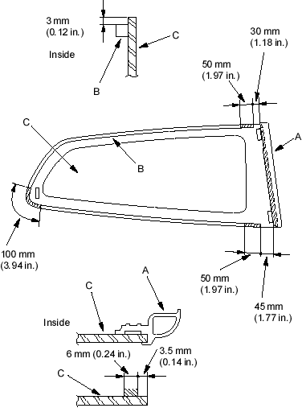
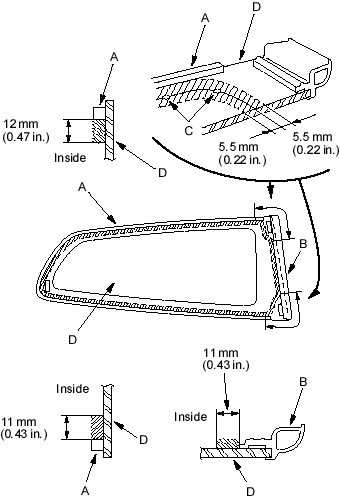

- First glue the front seal (A) and glue the rubber dam (B) to the inside face of the quarter glass (C) as shown. Before installing the front seal and rubber dam, apply primer (3M N-200, or equivalent) to the inside face of the glass, then glue the seal on:
- Be sure the front seal lines up with the bottom and front edges of the glass.
- Be careful not to touch the glass where adhesive will be applied.
Cross hatched area: Apply primer here.

- With a sponge, apply a light coat of glass primer along the edge of the rubber dam (A) and front seal (B) as shown, then lightly wipe it off with gauze or cheesecloth:
- With the printed dots (C) on the quarter glass (D) as a guide, apply the glass primer to the upper and lower corner portions of the quarter glass.
- Do not apply body primer to the quarter glass and do not get body and glass primer sponges mixed up.
- Never touch the primed surfaces with your hands . If you do, the adhesive may not bond to the quarter glass properly, causing a leak after the quarter glass is installed.
- Keep water, dust and abrasive materials away from the primed surface.
Cross hatched area: Apply primer here.
